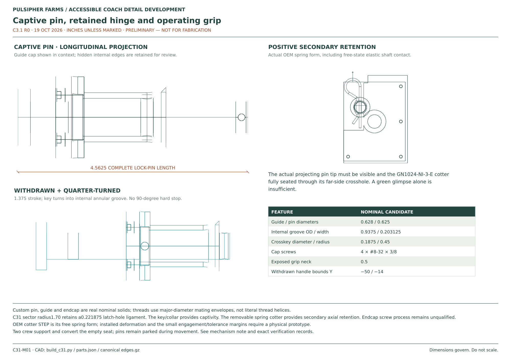
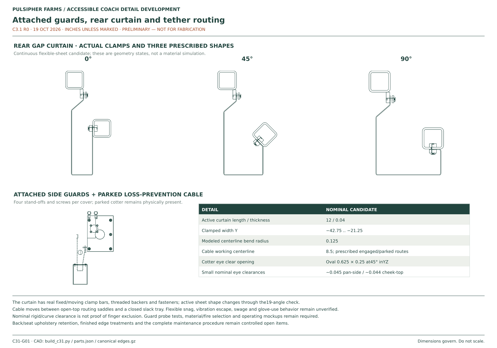
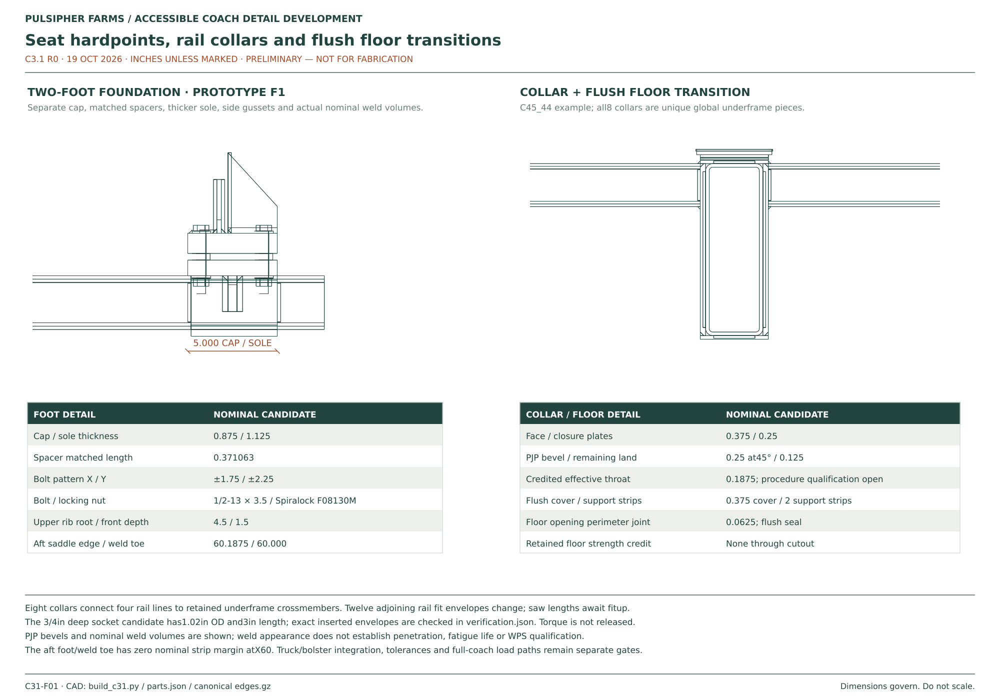

C3.1 · R0 · 19 OCTOBER 2026
Folding seats: locks, guards and floor connections
Captive lock pins, separate spring cotters, front handholds, hinge covers and a folding rear curtain are drawn as individual parts. Reinforced rail ends and the complete proposed bolt stack connect the seats to the underframe.
Preliminary physical design. Nominal CAD checks are recorded separately from load screens and prototype checks. Cotter retention capacity, flexible guarding, tolerances, fatigue and final joint acceptance remain open.


Dimensioned drawings


C31-M01Captive pins, secondary retainers and front handholds

C31-G01Hinge covers, rear curtain and folding motion

C31-F01Feet, welded saddles, rail-end collars and floor closeoutsInspect the actual components
A lock that can be inspected
Each side uses a custom 5/8-inch pin with an integral capture collar, a removable guide end cap and a knurled head. A quarter-turn parking groove holds the pin withdrawn while the seat moves. The parking groove carries no occupied-seat load. A separate stainless spring cotter passes through the projecting far end after engagement.
The confirmation is physical: the projecting tip is visible through the inspection opening and the cotter is installed through its cross-hole. A green tip and red withdrawn shank support the check; paint alone is not confirmation. Check both sides in either end position.
| Detail | Nominal proposal |
|---|---|
| Lock pin travel | 1.375 in; 0.1875 in sector clearance when fully withdrawn |
| Pin / guide clearance | 0.003 in at nominal diameter; proposed ground shaft gives 0.0035–0.0045 in; lock hole 0.65625 in |
| Secondary retainer | JW Winco GN 1024-NI-3-E; 3 mm wire in a 3.5 mm cross-hole |
| Hinge retainer | GN 1024-NI-4-E, separate washer and covered hinge end |
| Pin grip | 0.5 in exposed neck behind a 1.125 in diameter head |
| Main pin material | Certified 17-4 PH H1150 proposal; 105 ksi minimum yield is a procurement requirement, not purchased certification |
Controlled folding and pinch protection
Two front handholds give the operator a defined grip away from the hinge. The preliminary handling sequence uses two crew members with the coach stationary and the seat empty: support the pan, remove and park both cotters, withdraw and park both pins, move to the opposite stop, reinsert both pins, then install and inspect both cotters.
Fixed cheek covers and overlapping moving covers surround the hinge and stop regions. A clamped fabric accordion curtain follows the changing rear gap. The CAD curtain conserves panel length at the sampled angles; it is a proposed shape, not a validated material simulation. Open routing saddles guide the attached cotter tethers; the tether is rerouted between engaged and parked positions.
Physical checks still need gloves, reach, flexible-material behavior, finger probes, worn clearances and a controlled full-motion prototype. Do not infer pinch protection from a zero solid-overlap result.
A continuous proposed floor load path
Each post transfers load through gussets and a welded saddle to a 5 × 6-inch foot. Four 1/2-inch bolts clamp the 1.125-inch sole, spacer and 0.875-inch cap. The rail ends meet eight external closed collars at the existing crossmembers. Twelve affected rails are shortened to the new collar faces; the design does not assume inaccessible internal diaphragms.
| Connection | Actual detail in this issue |
|---|---|
| Foot hardware | 1/2-13 × 3.5 in Grade 8 candidate; F436 washers both sides; Spiralock F08130M flange nut |
| Steel grip | 2.371063 in; proposed completed stack 3.002063–3.183063 in |
| Thread projection | 0.316937–0.497937 in for the stated hardware range |
| Tool access | 3 in long, 1.02 in OD socket; 1.125 in reserved tool diameter; removable floor closeouts |
| Rail collars | 3/8 in face plates with 1/4 in top and bottom plates |
| Floor transitions | Full-depth openings with flush 3/8 in steel covers and supported sealed edges |
| Weld definition | Separate foot, rail-end, collar and cover weld geometry; PJP preparation and effective throat stated in the foundation record |
Bolt torque and preload are not released. Witness marks identify movement; they do not replace the locking nut. Stock corner fit, weld sequence, distortion and inspection access remain part of the joint qualification.
Coach layout and mass
Two folding seats remain aboard in every seating mode. The complete seat-and-foundation development allocation is now 90 kg per place / 180 kg per coach, including each seat’s share of the new collars and floor work. This replaces the C3 allowance of 65 kg per place; do not add the full 180 kg again to a mass budget already carrying the previous 130 kg.
The accessible layout remains 11 fixed plus two convertible places, or 13 passengers excluding crew. C4 checks side boarding with the wider lock heads and either other wheelchair bay occupied. The body and fixed-seat shapes in the coordinated viewer remain explicitly labeled space references.
Nominal cut profiles
DXF sections from the same source geometry. These omit release tolerances, bend/weld process allowances and procurement acceptance.
Outer hinge cover · Inner hinge cover · Moving sector · Foot sole · Foot cap · Foot rib · Grip arm · Fixed curtain clamp · Moving curtain clamp
Editable CAD and part records
Gzip downloads contain the named file with its original geometry and units. Decompress before importing STEP into CAD. Nominal dimensions and material candidates do not replace released fabrication tolerances or acceptance records.